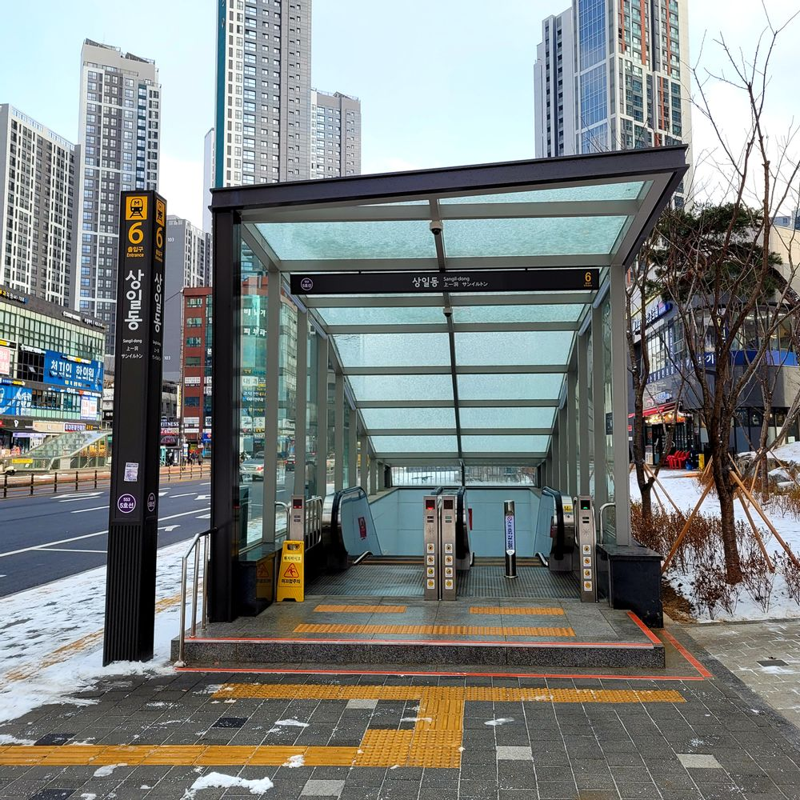

5호선 본선의 역 중 하나이며 1995년 11월 5호선 최초개통부터 2021년 3월 27일 전까지 서울 시계 내의 역들 중에 최동단에 위치한 역이였다. 이후 강일역이 개통하면서 넘겨주었다. 막차 시간대에 이 역에서 강동역까지 운행하는 열차가 있는데, 수도권의 지하철 운행계통 중 운행하는 거리(4.7km)가 2번째로 짧다. 1위는 8호선 첫차 시간대에 있는 잠실발 암사행.(4.6km). 평일(5218)은 밤 00:00분 출발→00:09분 도착.(막차(5220)는 00:15발 01:01애오개행), 토요일/공휴일(5188)은 밤 23:40분 출발 23:49분 도착(막차). 토요일/공휴일 5188(명절 5162)의 경우에는 주박 안하고 고덕차량사업소로 돌아간다. 방화발 강동행 5181(5155)가 이미 주박하고 있기 때문.
역 안내도를 보면 짐작할 수 있겠지만 출구 간 거리가 매우 길다. 6호선 상월곡역, 7호선 청담역과 매우 비슷한 구조로, 상당한 불편을 유발한다. 더욱이나 화장실도 한 곳에 치우쳐 있어 화장실 반대쪽 출구에서는 차라리 근처 상가 화장실이 더 가깝다. 역 구조 상 승강장으로 가는 엘리베이터 설치가 불가능하여 왼쪽 길에 휠체어리프트가 있다.